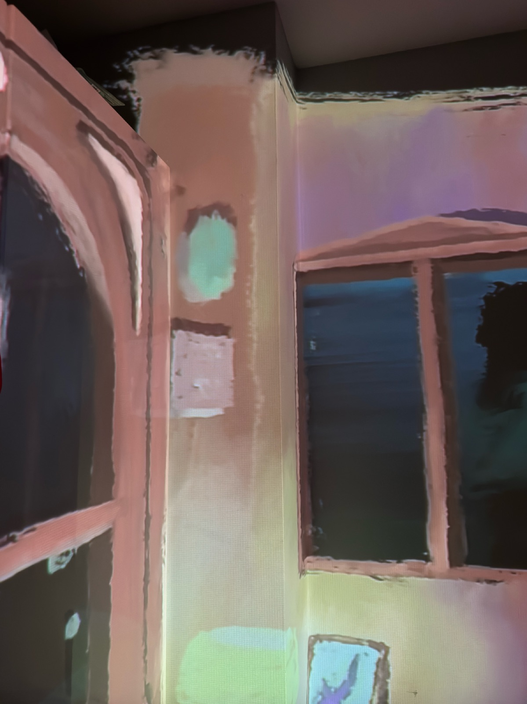
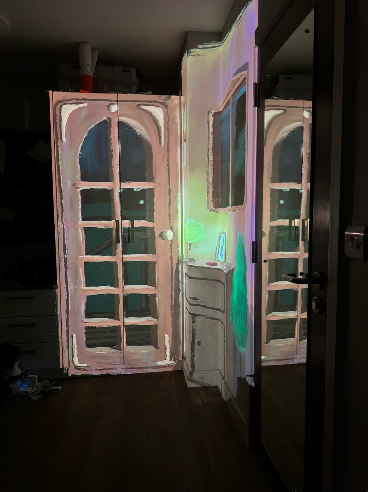
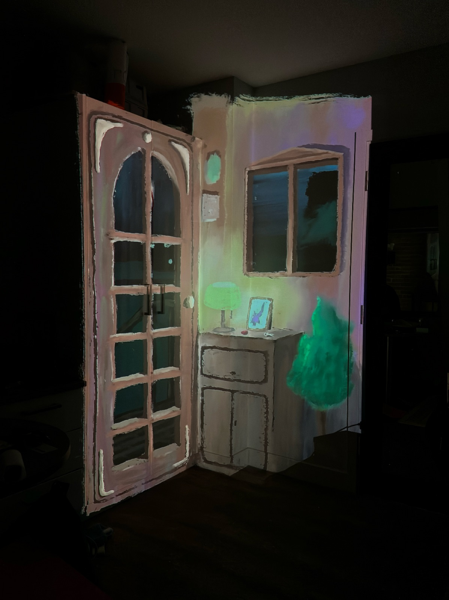
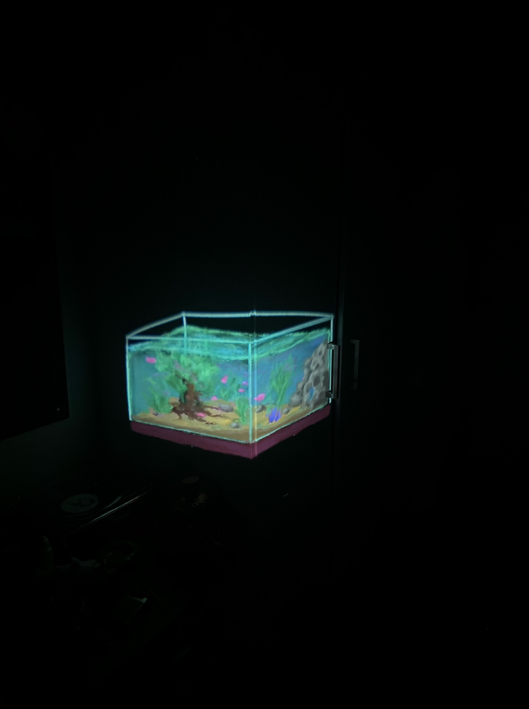
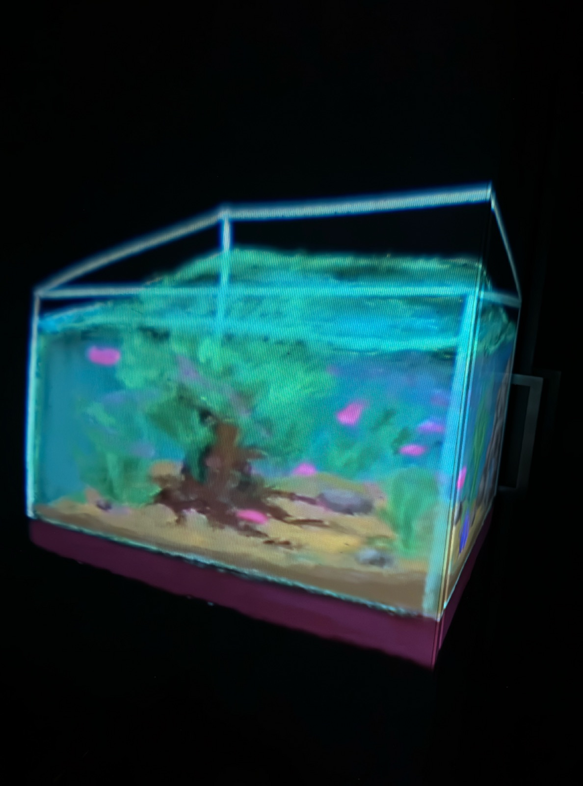
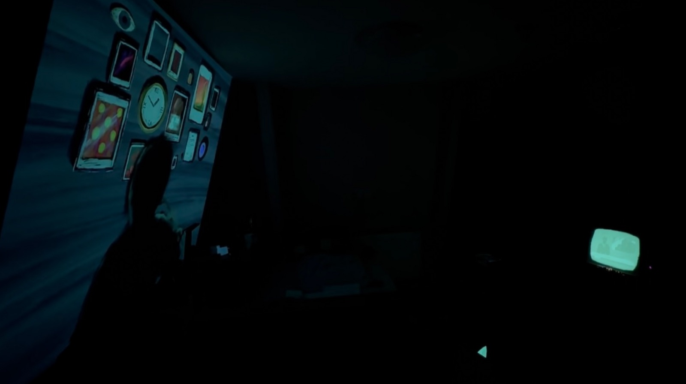
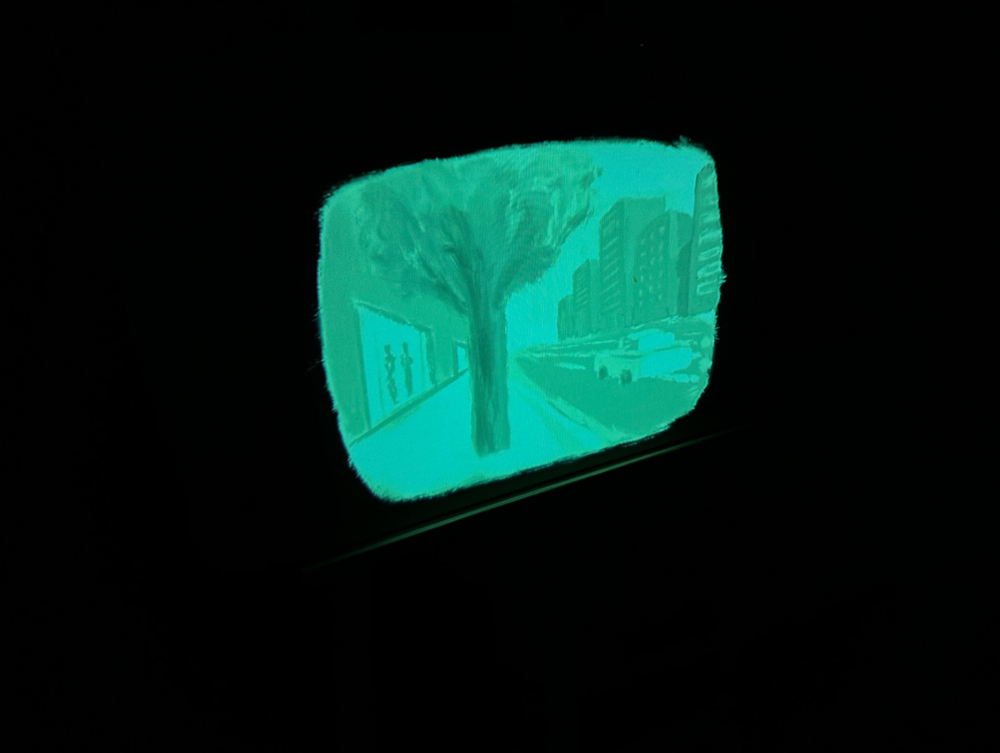
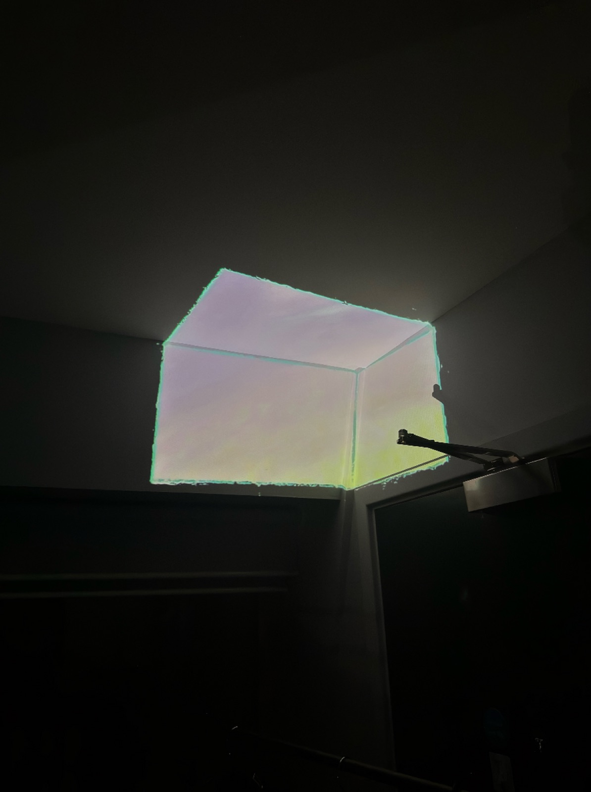
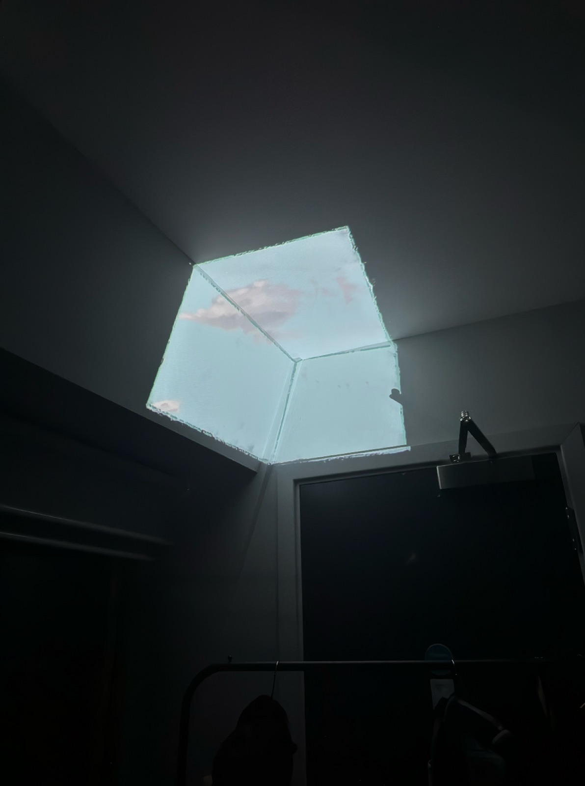

PROJECT 06 / 2024–2025
Oblivion
Projection / Installation
Moving images placed within everyday spaces.
Projection video installations in varying dimensions: 1.5 × 1.5 × 2 m; 0.8 × 0.5 × 0.5 m; 8 × 5 × 3 m; and 1.5 × 2 m.









